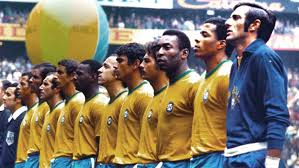
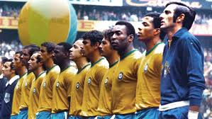

Los inicios
La historia de los mundiales de fútbol comenzó en 1930, cuando la FIFA organizó el primer torneo internacional en Uruguay.
Desde entonces, el Mundial se ha convertido en el evento deportivo más grande del mundo, celebrándose cada cuatro años y
reuniendo a las mejores selecciones nacionales para competir por el título de campeón mundial.
 A lo largo de las décadas, los mundiales han sido testigos de momentos inolvidables, desde goles legendarios hasta
rivalidades épicas entre naciones. Equipos como Brasil, Alemania, Italia y Argentina han dejado su huella en la historia
del torneo, con jugadores icónicos que han cautivado a millones de aficionados en todo el mundo.

A lo largo de las décadas, los mundiales han sido testigos de momentos inolvidables, desde goles legendarios hasta
rivalidades épicas entre naciones. Equipos como Brasil, Alemania, Italia y Argentina han dejado su huella en la historia
del torneo, con jugadores icónicos que han cautivado a millones de aficionados en todo el mundo.
